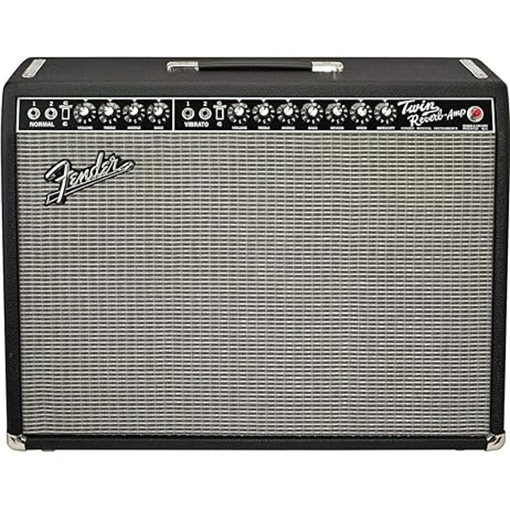
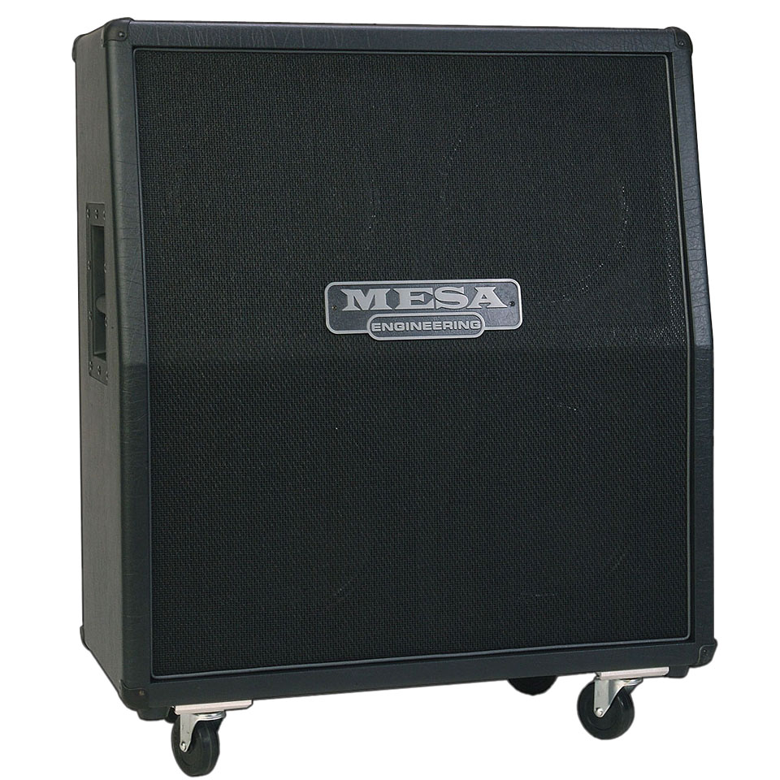

Fender-style cleanCombos americanos
Guitarra, baixo, violao e modeladores
IRs organizados por instrumento, amp, gabinete, microfone e sample rate. Esta versao publica abre direto em qualquer navegador, sem login do ChatGPT.


Organizacao
Escolha um filtro para carregar os IRs.